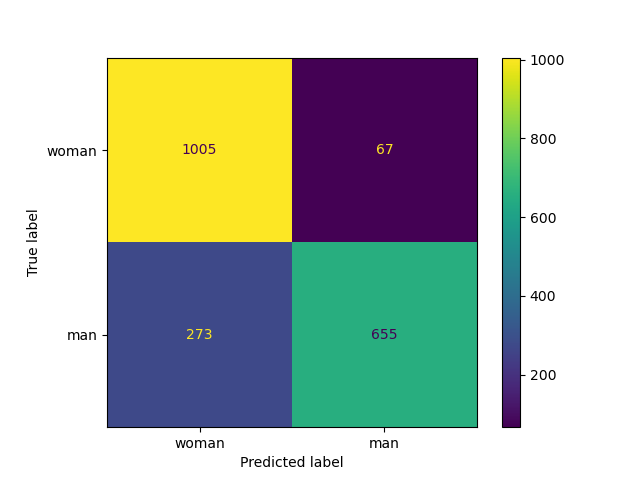

Note
Click here to download the full example code
MRCs with Deep Neural Networks: Part II
In this example we will use a features extracted from different sets of images using pretrained neural networks, as explained in MRCs with Deep Neural Networks: Part I.
We will use image features correponding to a set of training images to train an MRC model to then predict the class of a set of test images using their correponding extracted features.
import numpy as np
from sklearn.metrics import confusion_matrix, ConfusionMatrixDisplay
from sklearn.model_selection import train_test_split
from MRCpy import MRC
from MRCpy.datasets import (
load_catsvsdogs_features_resnet18,
load_mnist_features_resnet18,
load_yearbook_features_resnet18)
MNIST Dataset: Digit Recognizer
The MNIST database of handwritten digits, available from
this page,
has a training set of 60000 examples, and a test set of 10000 examples. All
images have dimension (28,28,1) and they are greyscale.
We are using a set of 512 features extracted from each image using a
pretrained neural network as explained in MRCs with Deep Neural Networks: Part I.
We are performing binary classification, training a model to distinguish between two digits. We choose classification between 6 & 8.
We compare our results with the article “A Poor Example of Transfer Learning: Applying VGG Pre-trained model with Keras” where they perform this same task with a different pretrained network (VGG) and a different classification algorithm (logistic regression) obtaining poor results: accuracy of 50.2%, which is really similar to juust random guessing. This shows that using any classification algorithm over features extracted with a pretrained model does not always work good. They also replicate the binary classification problem using logistic regression directly over MNIST raw data and obtain accuracy of 98.71%.
X_train, X_test, Y_train, Y_test = load_mnist_features_resnet18(split=True)
idx_binary_train = np.logical_or(Y_train == 6, Y_train == 8)
idx_binary_test = np.logical_or(Y_test == 6, Y_test == 8)
X_train_binary = X_train[idx_binary_train]
X_test_binary = X_test[idx_binary_test]
Y_train_binary = Y_train[idx_binary_train]
Y_test_binary = Y_test[idx_binary_test]
clf = MRC(phi='linear').fit(X_train_binary, Y_train_binary)
Y_pred = clf.predict(X_test_binary)
error = np.average(Y_pred != Y_test_binary)
accuracy = 1 - error
print('MNIST Binary Classification (6 vs. 8) accuracy error: '
+ '%2.2f' % (accuracy * 100) + '%')
cm = confusion_matrix(Y_test_binary, Y_pred)
cm_display = ConfusionMatrixDisplay(cm, display_labels=['6', '8']).plot()
Out:
MNIST Binary Classification (6 vs. 8) accuracy error: 99.38%
Cats vs Dogs Dataset
Cats vs dogs dataset is a database of 23262 RGB cats and dogs images released by Microsoft for the Asirra captcha (homepage). Cats are labeled by 0 and dogs by 1 and there are 11658 and 11604 images of each class, respectively. We are using the features extracted using a pretrained ResNet18 netowork over ImageNet.
For comparison purposes, in this tutorial they obtain accuracy of 97% for this task using a pretrained VGG16 network together with some more deep neural layers.
X, Y = load_catsvsdogs_features_resnet18()
X_train, X_test, Y_train, Y_test = train_test_split(
X, Y, test_size=0.25, random_state=42)
clf = MRC(phi='linear').fit(X_train, Y_train)
Y_pred = clf.predict(X_test)
error = np.average(Y_pred != Y_test)
accuracy = 1 - error
print('Cats vs Dogs accuracy error: ' + '%2.2f' % (accuracy * 100) + '%')
cm = confusion_matrix(Y_test, Y_pred)
cm_display = ConfusionMatrixDisplay(cm, display_labels=['cat', 'dog']).plot()
Out:
Cats vs Dogs accuracy error: 97.92%
Yearbook Dataset
The Yearbook dataset which is a publicly-available dataset of 37,921 frontal-facing American high school yearbook portraits taken from 1905 to 2013 labeled by gender. We will perform binary classification. We want to predict whether the person on the image is a man or a woman.
We wil train an MRC with two different settings: training with the first 2000 images and training with the first 16000 images, testing in both cases over images from 16000 to 18000. Note that images are ordered chronologically.
For coparison purposes, in Kumar, Ma, and Liang (2020)[2], they report accuraccies of 75.3±1.6 when training with “source” images (2000 first ones), 76.9±2.1 when training with “target” images (14000 next ones), 78.9±3.0 when training with both and 83.8±0.8 when applying their method “Gradual Self-Training”.
See also
More information about Yearbook dataset can be found in
[1] Ginosar, S., Rakelly, K., Sachs, S., Yin, B., & Efros, A. A. (2015). A century of portraits: A visual historical record of american high school yearbooks. In Proceedings of the IEEE International Conference on Computer Vision Workshops (pp. 1-7).
[2] Kumar, A., Ma, T., & Liang, P. (2020, November). Understanding self-training for gradual domain adaptation. In International Conference on Machine Learning (pp. 5468-5479). PMLR.
X, Y = load_yearbook_features_resnet18()
X_train = X[:2000, :]
Y_train = Y[:2000]
X_test = X[16000:18000, :]
Y_test = Y[16000:18000]
clf = MRC(phi='linear').fit(X_train, Y_train)
Y_pred = clf.predict(X_test)
error = np.average(Y_pred != Y_test)
accuracy = 1 - error
print('Yearbook prediction accuracy (2000 training instances): ' +
'%2.2f' % (accuracy * 100) + '%')
cm = confusion_matrix(Y_test, Y_pred)
cm_display = ConfusionMatrixDisplay(cm, display_labels=['woman', 'man']).plot()
X_train = X[:16000, :]
Y_train = Y[:16000]
X_test = X[16000:18000, :]
Y_test = Y[16000:18000]
clf = MRC(phi='linear').fit(X_train, Y_train)
Y_pred = clf.predict(X_test)
error = np.average(Y_pred != Y_test)
accuracy = 1 - error
print('Yearbook prediction accuracy (16000 training instances): ' +
'%2.2f' % (accuracy * 100) + '%')
cm = confusion_matrix(Y_test, Y_pred)
cm_display = ConfusionMatrixDisplay(cm, display_labels=['woman', 'man']).plot()
- 
Out:
Yearbook prediction accuracy (2000 training instances): 83.00%
Yearbook prediction accuracy (16000 training instances): 86.05%
Total running time of the script: ( 1 minutes 16.735 seconds)